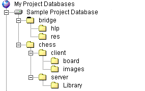

Use the sample project database to practice Serena ChangeMan Version Manager tasks and to complete the tutorial in the Serena ChangeMan Version Manager Getting Started Guide. The sample project database is installed automatically when you install Version Manager on Windows. On UNIX platforms, installing the sample project database is a component of Version Manager that you can choose to install. If the sample project database is not visible when you start Version Manager, you can open it at any time. See Opening the Sample Project Database for more information.
The sample project database contains two projects:

| Working with users | The project database has multiple Users defined for it, in addition to the default Admin User. You can practice modifying, deleting, and adding Users. |
| Setting workspaces | There are multiple workspaces defined for the sample project database. Use these workspaces to practice setting, deleting, and modifying workspaces. You can also create new workspaces. |
| Checking out revisions and checking in workfiles | Each project contains multiple workfiles that you can use to practice checking out revisions. Once you check out a revision, it becomes a workfile you can modify. You can then check the modified workfile back in to Version Manager to create a new revision. |
| Adding workfiles | Although each project already contains workfiles, you can add workfiles to the existing sample projects or create new projects in the sample project database and add files to the new projects. |
| Working with promotion groups | Promotion groups have been assigned to the Bridge project. Use this project to practice assigning, changing, and removing promotion groups and to practice promoting a file to the next promotion group. |
| Working with version labels | Version labels have been assigned to the Chess project. Use this project to practice assigning, renaming, and deleting version labels. |
| Opening the Sample Project Database |